Niqiu Protects the Watermelons 泥鳅看瓜 (1974) #
Niqiu Protects the Watermelons 泥鳅看瓜, illustrated by Zhong Shan 钟山, translated by Laura Aymar, Bettina Jin, Piet Kortenjan, Lena Henningsen, Sascha Sacknieß, Sophia Schöller, Joschua Seiler, Miriam Stadler, Yixiong Wang and Jenny Wiggermann, Tianjian: Tianjin renmin meishu chubanshe, 1974. (No author or editor named).1
Introduction to the text #
Lena Henningsen
The first two pages set the scene for this story which takes place during the Second World War in China – or, rather, during the War of Resistance against Japan, as the Second World War (1937-1945) is commonly termed in China. The story takes place in Zhangjia Village which could also be translated as Zhang Family Village in Hebei Province. Despite the clear location, Zhangjia Village could be anywhere where fighting took place among the communist forces of the People’s Liberation Army and the Japanese invaders. These fights, the reader of this comic book learns soon, directly impacted the villagers as they fought on different sides. The village has been liberated and is now headed by cadres of the Chinese Communist Party (CCP), who continue the fight against the threats posed by the invaders. The kids in the village are organized in a Children’s Corps, and Uncle Zhang is described as a family member of a member of the communist forces on page 2 (抗属, translated here as “military dependent”), rendering him a respected member of the community. On the enemy’s side, there are the Japanese soldiers, and, more despicable in the eyes of the local villagers, there are puppet soldiers (伪军), i.e. Chinese soldiers who fought for the Japanese invaders, and later on traitors (汉奸队 26), including a plain clothes spy (便衣队特务 31).
The time of action is specified to 1942, which marks one of the turning points in the history of the CCP. The CCP had set up headquarters in Yan’an (Shaanxi Province). 1942 saw the beginning of the first rectification campaign (延安整风运动) through which Mao Zedong consolidated his power. The reference to the Yangge tradition (秧歌, pages 13 and 19) also serves as a reference to the revolutionary, pre-1949 past of the CCP. Yangge are a popular dance form originating in rural North China. The CCP used this dance form as a tool to disseminate socialist ideas among the population.
The second historical point of reference for an understanding of the story is 1974, the year of its publication. After the tumultuous early years of the Cultural Revolution, the country is returning to a distinct level of normalcy, including the fact that publishing houses resume publishing new works of art, including pocket-sized lianhuanhua 连环画. With their combination of images and brief texts and with their entertaining qualities, these books addressed young readers in particular and thus could be used for their educational and propagandistic values. The story celebrates the heroism of Niqiu, a courageous and honest young boy who is clearly created to serve as a role model for his young readers. Niqiu is given the task to oversee the watermelons because of his integrity and because he is a good swimmer: He needs to cover a distance of half a Chinese mile (里) each day (5). Historically, the length of a mile varied depending on regions, today it is defined as half a kilometer, so half a mile equals 250 m – indicating that the water pond is rather big, and that Niqiu is a good swimmer.
The story contains scenes of youthful play and of careless mischief. At the same time, the children are called upon to contribute to the rightful cause – to which Niqiu responds by taking up the fight himself, despite the warnings of an older villager. A careful reading may reveal that the children’s playfulness anticipates a contribution to the larger cause. When Niqiu fools his friends using the watermelon, this trap is referred to with the term 空城计 (literally “empty city strategy” in which an enemy is deceived into thinking that an undefended location is full of ambushes, thus causing the enemy to retreat 22) which can be traced back to the 36 Stratagems, thus locating the plot both within the Chinese tradition and within the 1970s when the 36 Stratagems continued to be referred to. Moreover, it frames the story of a young boy within the realm of strategies of military defense against a potent enemy.
His courageousness is crowned with victory – and framed within the proper rhetoric of the Cultural Revolution. He resists the threats of the spy, as “children raised by Mao Zedong's Thought do not listen to such kinds of threats, and temptations have no effect on them.” (47) And the villagers similarly make an explicit connection between Niqiu’s success and the efforts of the CCP by stating: “Niqiu is a good boy educated by the Communist Party, he averted yet another harm to the villagers!” (57). As such the lianhuanhua is as much a witness to the historical past of the War of Resistance against Japan as it is a witness of the rhetoric of its Cultural Revolutionary present.
About the translation #
We have taken much effort to contact the publisher of this comic in order to acquire permission by the copyright holder to publish the pages online. We regret that we have not received responses to our inquiries. If you believe that copyrights are not being respected, please send us an email message. We will respond as soon as possible and will work with you to either accredit the material correctly or remove it entirely.
Read the translated lianhuanhua #
- Front and back cover
-

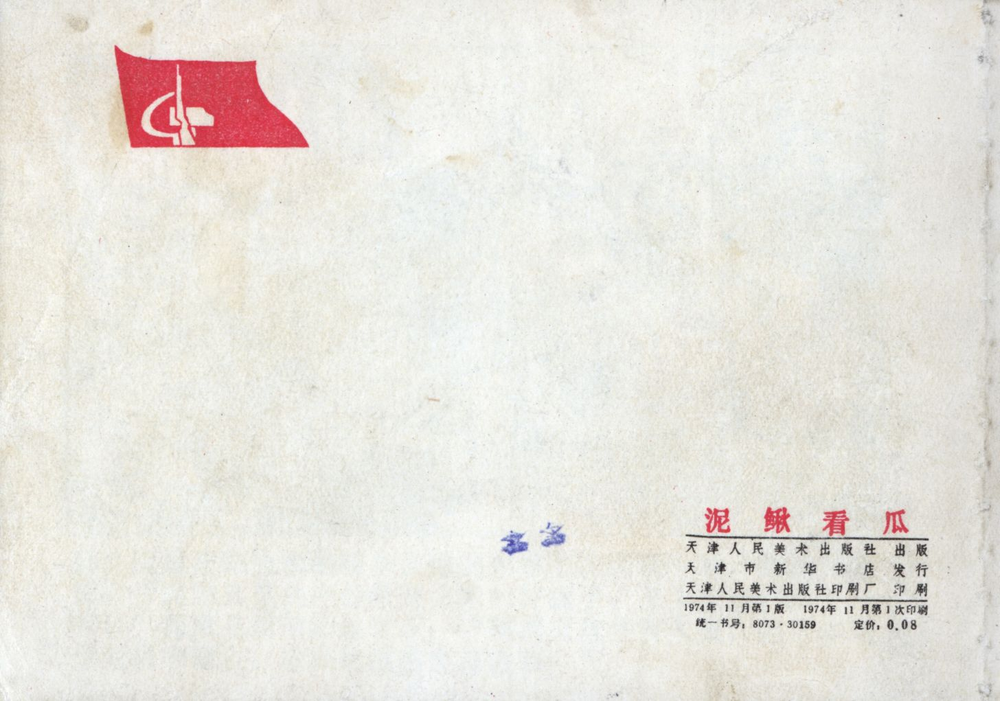
- Frontmatter
-

- Page 01
-
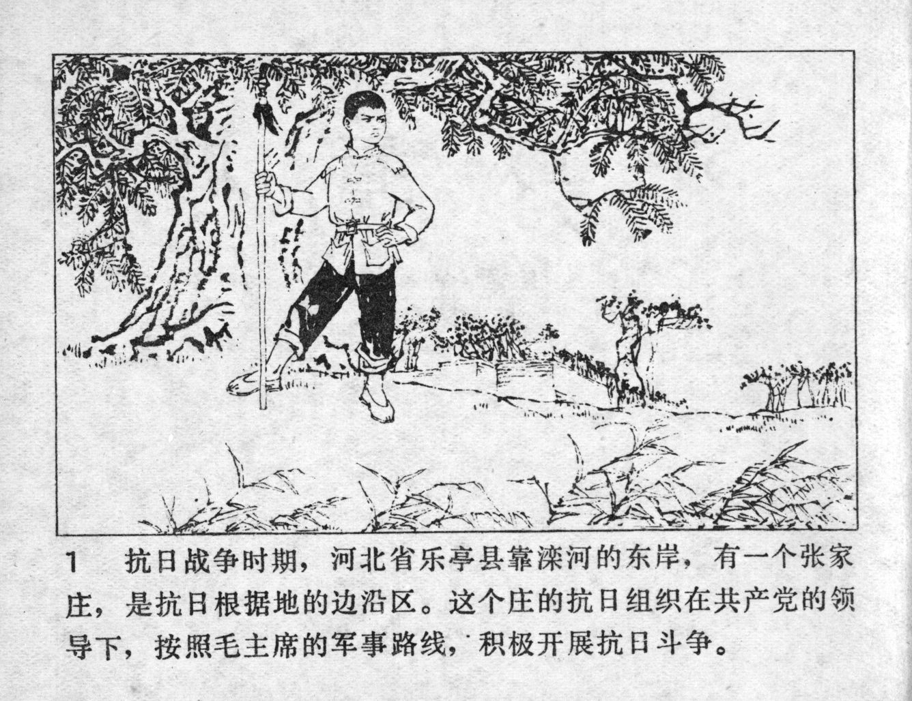
抗日战争时期，河北省乐亭县靠滦河的东岸，有一个张家庄，是抗日根据地的边沿区。这个庄的抗日组织在共产党的领导下，按照毛主席的军事路线，积极开展抗日斗争。During the War of Resistance Against Japan, there was a place named Zhangjia Village, located on the east bank of the Luan River in Laoting County, which was in the border area of an anti-Japanese base. The village’s anti-Japanese organization was under the leadership of the Communist Party and actively carried out the anti-Japanese struggle in accordance with Chairman Mao’s military line. - Page 02
-
 一九四二年夏天，盘踞在河西据点里的日寇，特务，伪军，经常出来抓老百姓，抢东西。村里人都恨透了这帮坏蛋。有一天，敌人到河东“讨伐”。把抗属张大爷种的一亩西瓜凡熟的都给抢吃了，临走还把他打了一顿。In the summer of 1942, Japanese invaders, spies, and puppet soldiers were stationed on the west side of the Luan River and often came out to take captive civilians and steal their things. Everyone in the village detested these bastards. One day, the enemy arrived at the east side of the river to “punish” the locals. They robbed and ate all the ripe watermelons on the patch of Uncle Zhang, a military dependent. Before leaving, they even beat him up.
一九四二年夏天，盘踞在河西据点里的日寇，特务，伪军，经常出来抓老百姓，抢东西。村里人都恨透了这帮坏蛋。有一天，敌人到河东“讨伐”。把抗属张大爷种的一亩西瓜凡熟的都给抢吃了，临走还把他打了一顿。In the summer of 1942, Japanese invaders, spies, and puppet soldiers were stationed on the west side of the Luan River and often came out to take captive civilians and steal their things. Everyone in the village detested these bastards. One day, the enemy arrived at the east side of the river to “punish” the locals. They robbed and ate all the ripe watermelons on the patch of Uncle Zhang, a military dependent. Before leaving, they even beat him up. - Page 03
-
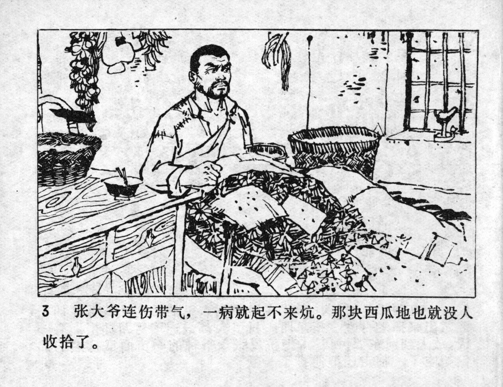
张大爷连伤带气，一病就起不来炕。那块西瓜地也就没人收拾了。Uncle Zhang was injured and annoyed, and he was bedridden. Also, no one was able to tidy up the watermelon patch. - Page 04
-
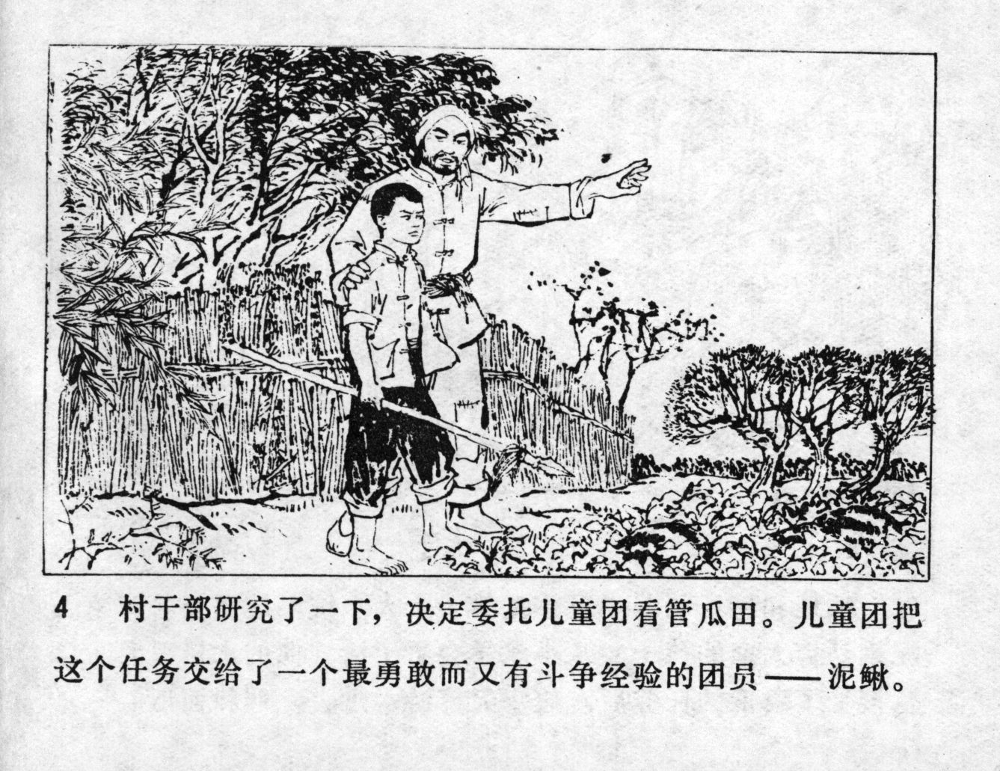
村干部研究了一下，决定委托儿童团看管瓜田。儿童团把这个任务交给了一个最勇敢而又有斗争经验的团员——泥鳅。Therefore, the village cadres discussed the matter and decided to entrust the Children’s Corps to take care of the melon patch. The Children’s Corps then gave this task to one of the bravest and most experienced League members: Niqiu. - Page 05
-
 瓜地和村子隔着半里路宽的一个大水坑,坑里长着芦苇。泥鳅是穷人家的孩子，从小就学会了干活。他的水量很大，自从接受了看瓜的任务后，他每天都游水过去，照料西瓜。The watermelon patch and the village were separated by a big water pond, half a mile wide with reeds growing inside. Niqiu came from a poor family and had learned to work hard since he was a small kid. He was a good swimmer, so after he had accepted responsibility to protect the melons, he swam over each day to tend to the watermelons.
瓜地和村子隔着半里路宽的一个大水坑,坑里长着芦苇。泥鳅是穷人家的孩子，从小就学会了干活。他的水量很大，自从接受了看瓜的任务后，他每天都游水过去，照料西瓜。The watermelon patch and the village were separated by a big water pond, half a mile wide with reeds growing inside. Niqiu came from a poor family and had learned to work hard since he was a small kid. He was a good swimmer, so after he had accepted responsibility to protect the melons, he swam over each day to tend to the watermelons. - Page 06
-
 泥鳅到了地理，总是闲不住，不是打瓜蔓，就是剜地蚕，嘴里还喊着：“沙瓤的大西瓜，谁吃谁甜掉牙！”At the patch, Niqiu always was busy. When he was not cutting the melon vines, he was picking out earthworms, all the while shouting: “A huge watermelon full of mushy pulp sweetens everyone’s life!”
泥鳅到了地理，总是闲不住，不是打瓜蔓，就是剜地蚕，嘴里还喊着：“沙瓤的大西瓜，谁吃谁甜掉牙！”At the patch, Niqiu always was busy. When he was not cutting the melon vines, he was picking out earthworms, all the while shouting: “A huge watermelon full of mushy pulp sweetens everyone’s life!” - Page 07
-
 由于泥鳅热心的收拾，又赶上雨水勤，瓜蔓爬满了地，小瓜又顶上来了，不到半月时间，个个长得比量米的柳条斗子还大。Because of Niqiu’s enthusiastic work, and the frequent rainfalls, the melon vines crawled over the whole field and the small watermelons began to grow again. Before half a month had passed, they had all grown even bigger than Niqiu’s wicker basket.
由于泥鳅热心的收拾，又赶上雨水勤，瓜蔓爬满了地，小瓜又顶上来了，不到半月时间，个个长得比量米的柳条斗子还大。Because of Niqiu’s enthusiastic work, and the frequent rainfalls, the melon vines crawled over the whole field and the small watermelons began to grow again. Before half a month had passed, they had all grown even bigger than Niqiu’s wicker basket. - Page 08
-
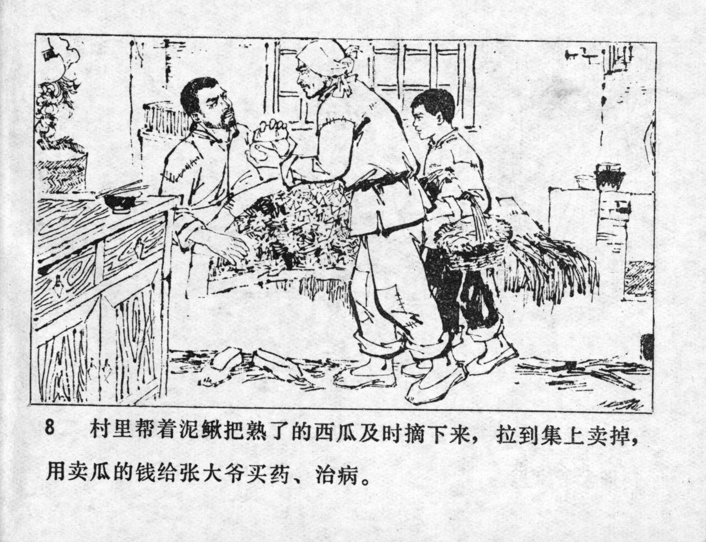
村里帮着泥鳅把熟了的西瓜及时摘下来，拉到集上卖掉，用卖瓜的钱给张大爷买药、治病。The village people helped Niqiu pick the ripe watermelons in time and brought them to the market to sell them. With the money they earned, they bought medicine for Uncle Zhang and cured his injuries. - Page 09
-
 一天，泥鳅把一个熟透了的大西瓜摘下来，洑着水把瓜运到张大爷家里。One day, Niqiu picked a very ripe watermelon. He took it to Uncle Zhang’s home by letting it float down the water.
一天，泥鳅把一个熟透了的大西瓜摘下来，洑着水把瓜运到张大爷家里。One day, Niqiu picked a very ripe watermelon. He took it to Uncle Zhang’s home by letting it float down the water. - Page 10
-
 这时，张大爷的病已好多了，他见泥鳅送了瓜来，便高兴得一骨碌坐起来。泥鳅抱着大西瓜，叫他尝尝。By then, Uncle Zhang was feeling a lot better. When he saw Niqiu bringing the watermelon, he sat up, rejoicing. Niqiu held the huge watermelon in his arms and asked Uncle Zhang to try it.
这时，张大爷的病已好多了，他见泥鳅送了瓜来，便高兴得一骨碌坐起来。泥鳅抱着大西瓜，叫他尝尝。By then, Uncle Zhang was feeling a lot better. When he saw Niqiu bringing the watermelon, he sat up, rejoicing. Niqiu held the huge watermelon in his arms and asked Uncle Zhang to try it. - Page 11
-
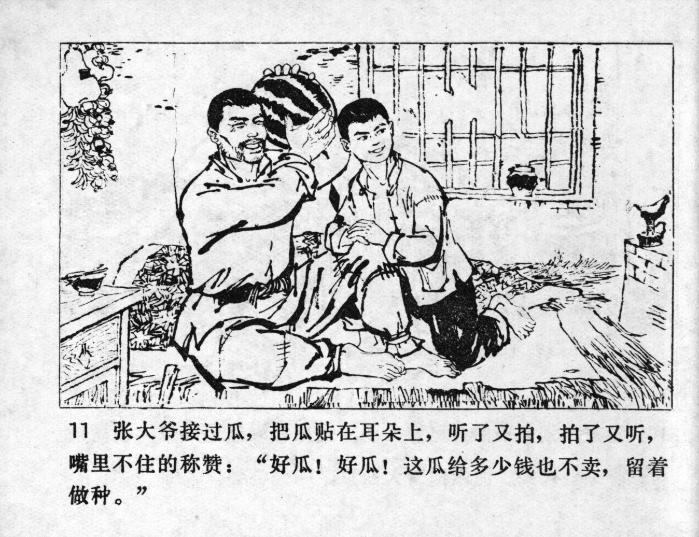
张大爷接过瓜，把瓜贴在耳朵上，听了又拍，拍了又听，嘴里不住称赞：“好瓜！好瓜！这瓜给多少钱也不卖，留着做种。”After Uncle Zhang took the melon, he held it very close to his ear, listening and patting, patting and listening. He could not stop praising: “Such a good watermelon! Such a good watermelon! No matter how much money they give us, we’re not selling this one. We keep it for making seeds.” - Page 12
-
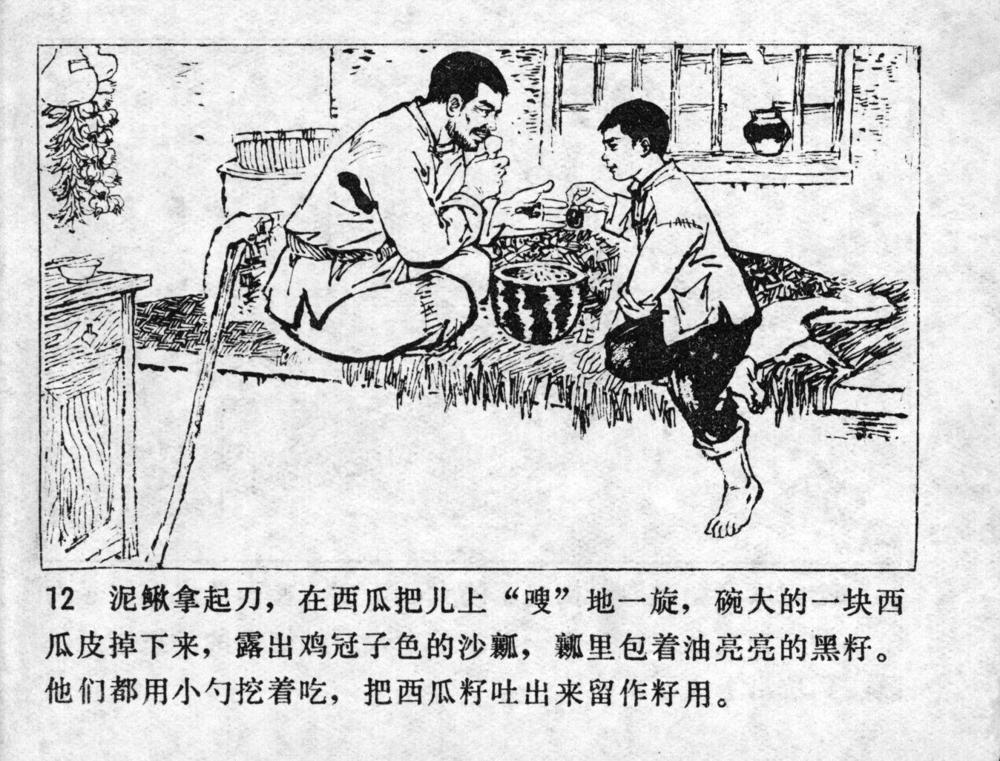
泥鳅拿起刀，在西瓜把儿上，“嗖” 地一旋，碗大的一块西瓜皮掉下来，露出鸡冠子色的沙瓤，瓤里包着油亮亮的黑籽。他们都用小勺挖着吃，把西瓜籽吐出来留作籽用。Niqiu picked up a knife, and – WHOOSH – let it down on the watermelon. A large piece of the watermelon fell off and revealed the cockscomb-coloured melon pulp, which was covered with shiny black seeds. They both dug out some pulp with small spoons and ate it, spitting out the watermelon seeds in order to use them as seeds. - Page 13
-
 吃完瓜，泥鳅抱着掏空了的大西瓜皮，在西瓜皮上挖了两个小洞，把西瓜皮往头上一套，象个大头娃娃似的，扭搭起秧歌，到坑沿上去了。After eating the melon, Niqiu held the hollowed-out watermelon skin, cut two small holes into it and put the watermelon peel on his head, so he looked like a big-headed doll. Dancing a Yangge, he went to the edge of the water pond.
吃完瓜，泥鳅抱着掏空了的大西瓜皮，在西瓜皮上挖了两个小洞，把西瓜皮往头上一套，象个大头娃娃似的，扭搭起秧歌，到坑沿上去了。After eating the melon, Niqiu held the hollowed-out watermelon skin, cut two small holes into it and put the watermelon peel on his head, so he looked like a big-headed doll. Dancing a Yangge, he went to the edge of the water pond. - Page 14
-
 泥鳅来到了水坑边上，水坑里有很多洗澡玩的孩子，扑通扑通地打着水。泥鳅悄悄地往水里一钻，只有一个套在头上的大西瓜皮留在水面上。When Niqiu came to the edge of the water pond, a lot of children were washing and playing in the water, splashing the water. Niqiu quietly waded into the water, only the watermelon peel was visible on the surface.
泥鳅来到了水坑边上，水坑里有很多洗澡玩的孩子，扑通扑通地打着水。泥鳅悄悄地往水里一钻，只有一个套在头上的大西瓜皮留在水面上。When Niqiu came to the edge of the water pond, a lot of children were washing and playing in the water, splashing the water. Niqiu quietly waded into the water, only the watermelon peel was visible on the surface. - Page 15
-
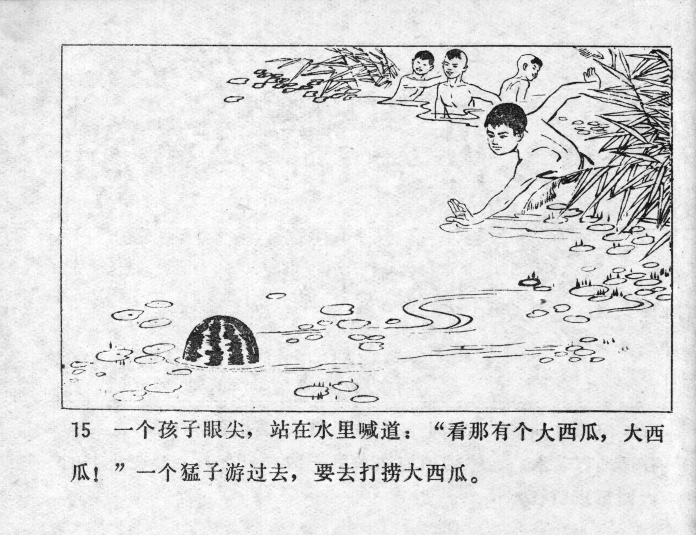
一个孩子眼尖，站在水里喊道：“看那有个大西瓜，大西瓜！”一个猛子游过去，要去打捞大西瓜。One of the children had sharp eyes. He stood in the water and shouted: “Look, there’s a huge watermelon, a huge watermelon!”, a courageous child swam over to get the huge watermelon out of the water. - Page 16
-
 其他的孩子也看到了，停止了“捉水猫猫”的游戏，都去捞那个大西瓜。西瓜在水面上一浮一浮的，孩子们追的快，瓜也游的快。Other children also saw it, so they stopped the game of “catch the water cat” and went to catch the huge watermelon. The watermelon was floating on the surface. As the children were chasing it fast, it was also swimming fast.
其他的孩子也看到了，停止了“捉水猫猫”的游戏，都去捞那个大西瓜。西瓜在水面上一浮一浮的，孩子们追的快，瓜也游的快。Other children also saw it, so they stopped the game of “catch the water cat” and went to catch the huge watermelon. The watermelon was floating on the surface. As the children were chasing it fast, it was also swimming fast. - Page 17
-
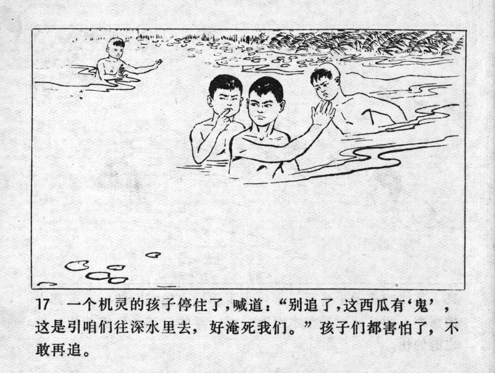
一个机灵的孩子停住了，喊道：“别追了，这西瓜有 '鬼'，这是引咱们往深水里去，好淹死我们。”孩子们都害怕了，不敢再追。A clever child stopped and yelled: “Stop chasing, there’s a ghost in this watermelon, it’s leading us into the deep water to drown us.” The children got scared and did not dare to continue their chase. - Page 18
-
 孩子们都上了岸，眼巴巴的看着这个大西瓜。泥鳅从小洞里看见他们害怕的样子，不由得想笑。The children all went ashore, looking anxiously at the huge watermelon. Niqiu watched their frightened expressions through the small holes in the watermelon and could not help wanting to laugh.
孩子们都上了岸，眼巴巴的看着这个大西瓜。泥鳅从小洞里看见他们害怕的样子，不由得想笑。The children all went ashore, looking anxiously at the huge watermelon. Niqiu watched their frightened expressions through the small holes in the watermelon and could not help wanting to laugh. - Page 19
-
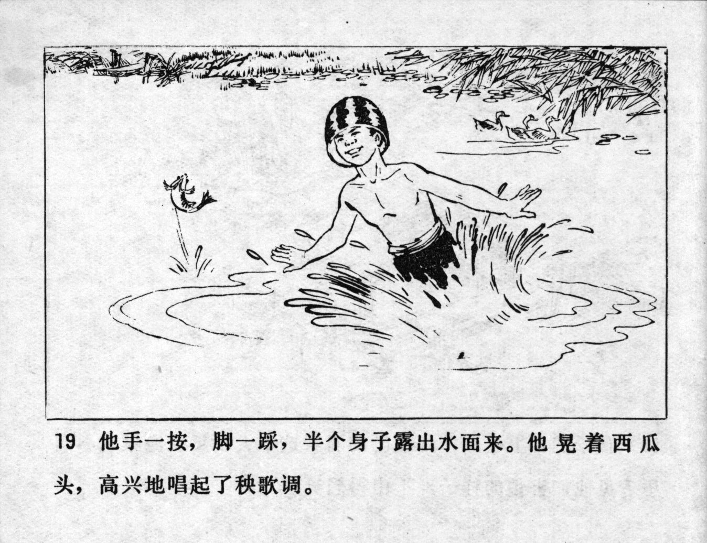
他手一按，脚一踩，半个身子露出水面来。他晃着西瓜头，高兴地唱起了秧歌调。He pushed with his hands, stomped with his feet and the upper part of his body emerged from the water. He shook his watermelon head and happily began to sing a Yangge tune. - Page 20
-
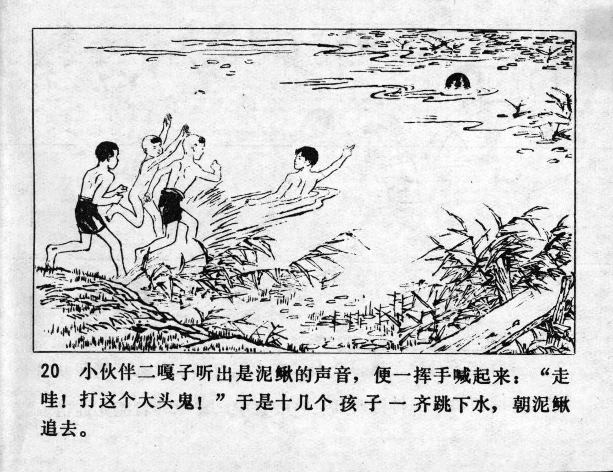
小伙伴二嘎子听出是泥鳅的声音，便一挥手喊起来：“走哇！打这个大头鬼！” 于是十几个孩子一齐跳下水，朝泥鳅追去。When Little Ergazi recognized Niqiu’s voice, he waved his hand and shouted: “Let’s go! Beat this big-headed ghost!” Following that, a dozen children collectively jumped into the water and chased after Niqiu. - Page 21
-
 一群孩子对付泥鳅一个人，在水里打起水仗来。烂泥从四面八方向他扔来，打得西瓜皮咚咚直响，泥鳅转着圈儿迎击。It was a bunch of kids against Niqiu alone, starting a battle in the water. Mud was thrown at Niqiu from all directions, hitting the watermelon skin with a thud. Niqiu, spinning in circles, retaliated.
一群孩子对付泥鳅一个人，在水里打起水仗来。烂泥从四面八方向他扔来，打得西瓜皮咚咚直响，泥鳅转着圈儿迎击。It was a bunch of kids against Niqiu alone, starting a battle in the water. Mud was thrown at Niqiu from all directions, hitting the watermelon skin with a thud. Niqiu, spinning in circles, retaliated. - Page 22
-
 打了一阵，泥鳅使了个空城计，他悄悄地把头从瓜皮里退出来，一个猛子扎到大苇塘里，掏水鸟蛋去了，他的小伙伴们还向瓜皮上扔泥呢。After fighting for a while, Niqiu made a feint. He carefully backed his head away from the watermelon, rapidly went into the big reed pond and went to dig for waterbird eggs. His comrades were still throwing mud at the watermelon skin.
打了一阵，泥鳅使了个空城计，他悄悄地把头从瓜皮里退出来，一个猛子扎到大苇塘里，掏水鸟蛋去了，他的小伙伴们还向瓜皮上扔泥呢。After fighting for a while, Niqiu made a feint. He carefully backed his head away from the watermelon, rapidly went into the big reed pond and went to dig for waterbird eggs. His comrades were still throwing mud at the watermelon skin. - Page 23
-
 忽然坑西边有人大声喊：“敌人来啦！”孩子们一听，赶忙上岸钻进了高粱地。Suddenly, someone screamed from the west of the pond: “The enemies are coming!” As soon as the children heard that, they hurriedly went ashore and slipped into the sorghum field.
忽然坑西边有人大声喊：“敌人来啦！”孩子们一听，赶忙上岸钻进了高粱地。Suddenly, someone screamed from the west of the pond: “The enemies are coming!” As soon as the children heard that, they hurriedly went ashore and slipped into the sorghum field. - Page 24
-
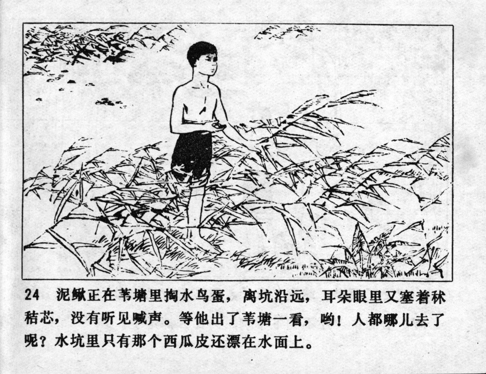
泥鳅正在苇塘里掏水鸟蛋，离坑沿远，耳朵眼里又塞着秫秸芯，没有听见喊声。等他出了苇塘一看，哟！人都哪儿去了呢？水坑里只有那个西瓜皮还漂在水面上。In the reed pond Niqiu was digging for water bird eggs, far away from the edge of the pond, and since his ears and eyes were filled with sorghum sticks, he did not hear the shout. When he got out of the reed and looked around, he thought: “Oh! Where is everyone?” Only the watermelon skin was still floating on the surface of the water. - Page 25
-
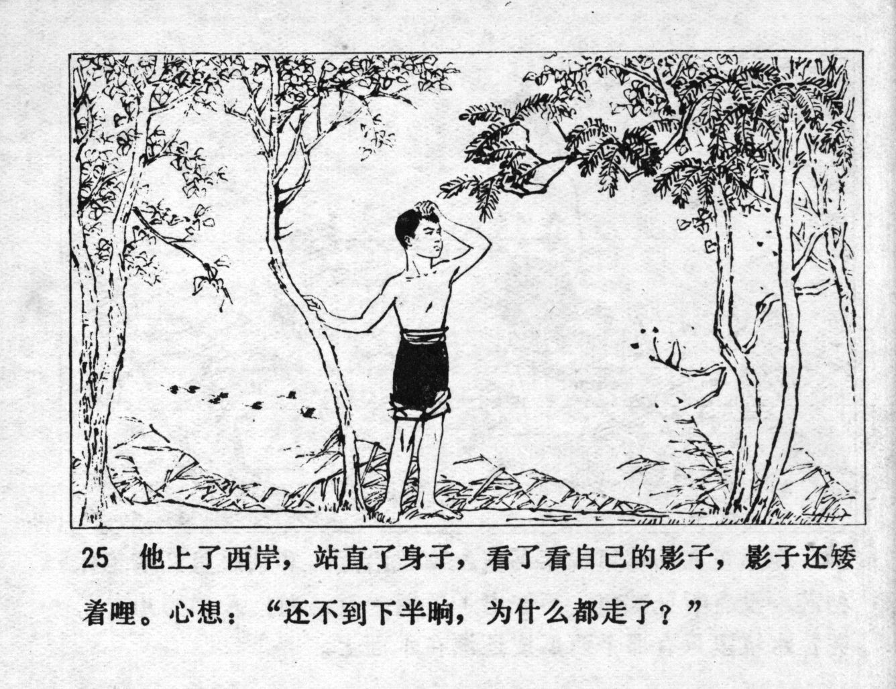
他上了西岸，站直了身子，看了看自己的影子，影子还矮着哩。心想：“还不到下半晌，为什么都走了？”He got onto the west bank, stood up straight and looked at his shadow which was still short. He thought: “It’s not yet afternoon, why did they all leave?” - Page 26
-
 他抖掉头上的水，正在坑沿上四下张望，一个乡亲从西往东跑过来，向后指着对泥鳅说：“快跑！汉奸队又来啦！”He shook the water off his head and looked around the edge of the pond when a villager came running past from west to east, pointing backwards and saying to Niqiu: “Run away! The traitors are returning!”
他抖掉头上的水，正在坑沿上四下张望，一个乡亲从西往东跑过来，向后指着对泥鳅说：“快跑！汉奸队又来啦！”He shook the water off his head and looked around the edge of the pond when a villager came running past from west to east, pointing backwards and saying to Niqiu: “Run away! The traitors are returning!” - Page 27
-
 泥鳅听了，手一扳树杈，就上了坑沿那棵弯弯的老柳树，手打眼罩往西一看，十几个伪军，正顺着小路往这边走。When Niqiu heard this, he grabbed a tree branch and pulled himself up onto the curved old willow tree at the pond. Using his hand as a visor, he looked westwards and saw a dozen or so puppet soldiers walking along a small path towards him.
泥鳅听了，手一扳树杈，就上了坑沿那棵弯弯的老柳树，手打眼罩往西一看，十几个伪军，正顺着小路往这边走。When Niqiu heard this, he grabbed a tree branch and pulled himself up onto the curved old willow tree at the pond. Using his hand as a visor, he looked westwards and saw a dozen or so puppet soldiers walking along a small path towards him. - Page 28
-
 那个老乡叫他快走，泥鳅看了看瓜地，咬了咬嘴唇说：“大叔你走吧，我还要看瓜！”那个老乡说：“看瓜？这可不是闹着玩的！上回那些坏蛋来，吃了瓜还把张大爷打了一顿。”The villager told him to run away, but Niqiu looked at the melon patch, bit his lip and said: “You go ahead, Uncle! I need to watch over the melons!” The villager answered: “Watch over the melons? This is not a joke! Last time those bastards came, they ate the melons and beat up Uncle Zhang.”
那个老乡叫他快走，泥鳅看了看瓜地，咬了咬嘴唇说：“大叔你走吧，我还要看瓜！”那个老乡说：“看瓜？这可不是闹着玩的！上回那些坏蛋来，吃了瓜还把张大爷打了一顿。”The villager told him to run away, but Niqiu looked at the melon patch, bit his lip and said: “You go ahead, Uncle! I need to watch over the melons!” The villager answered: “Watch over the melons? This is not a joke! Last time those bastards came, they ate the melons and beat up Uncle Zhang.” - Page 29
-
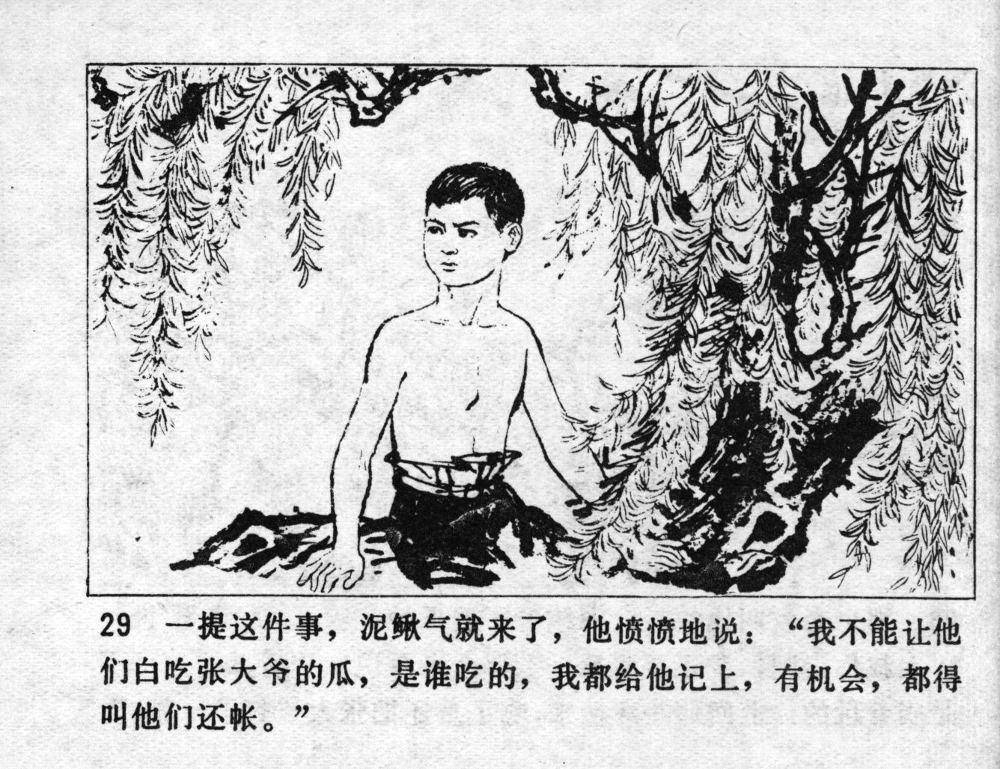
一提这件事，泥鳅气就来了，他愤愤地说：“我不能让他们白吃张大爷的瓜，是谁吃的，我都给他记上，有机会，都得叫他们还帐。”
When this was mentioned, Niqiu’s anger rose again. He said angrily: “I can’t let them eat Uncle Zhang’s melons for free. Whoever ate them, I’ll put that on his bill, and I’ll make them pay for it when I get the chance.”
- Page 30
-
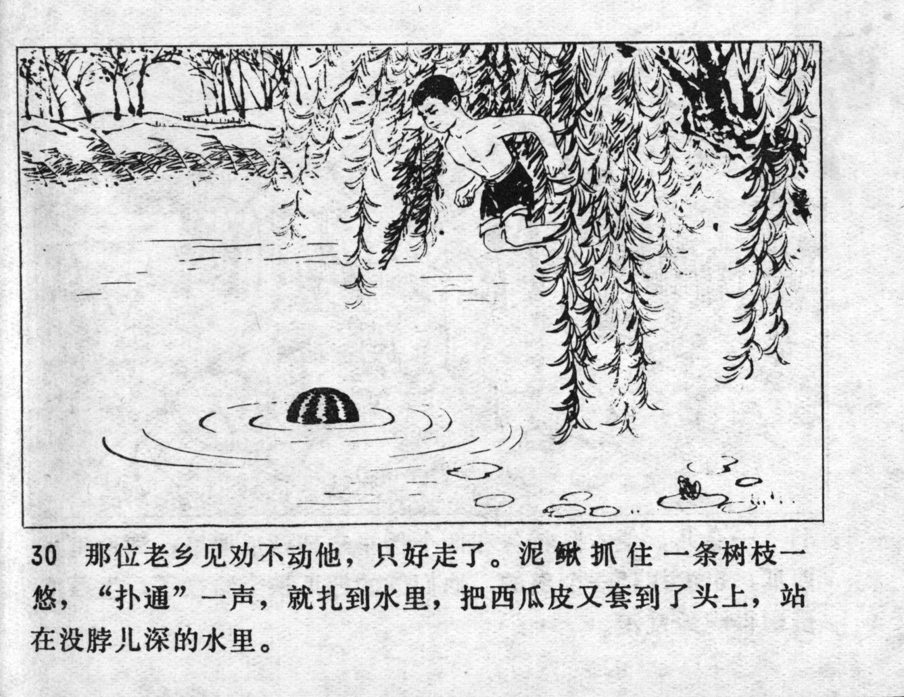
那位老乡见劝不动他，只好走了。泥鳅抓住一条树枝一悠，“扑通”一声，就扎到水里，把西瓜皮又套到了头上，站在没脖儿深的水里。The villager saw that Niqiu could not be persuaded, so he could only walk away. Niqiu grabbed a long tree branch, swung himself and - SPLASH - plunged into the water. He put the watermelon skin on his head again and stood in the water which did not reach his neck. - Page 31
-
 一会儿，便衣队特务和两个伪军来到西瓜地里，满地里找西瓜，也没找到一个熟的，他们气的把瓜秧全给拔了，生西瓜蛋踢得满地乱滚。After a while, a plain clothes spy and two puppet soldiers came to the watermelon patch and searched the whole ground for melons but could not find a single ripe one. They became so angry that they pulled up all the melon seedlings and kicked the unripe melons all over the place.
一会儿，便衣队特务和两个伪军来到西瓜地里，满地里找西瓜，也没找到一个熟的，他们气的把瓜秧全给拔了，生西瓜蛋踢得满地乱滚。After a while, a plain clothes spy and two puppet soldiers came to the watermelon patch and searched the whole ground for melons but could not find a single ripe one. They became so angry that they pulled up all the melon seedlings and kicked the unripe melons all over the place. - Page 32
-
 糟踏了一阵，他们站在坑沿上，用高粱叶子作扇子，扇着体息，口渴得直舐嘴唇。After trampling for a while, they stood on the edge of the pond and used sorghum leaves as fans. Fanning, they rested and licked their lips with thirst.
糟踏了一阵，他们站在坑沿上，用高粱叶子作扇子，扇着体息，口渴得直舐嘴唇。After trampling for a while, they stood on the edge of the pond and used sorghum leaves as fans. Fanning, they rested and licked their lips with thirst. - Page 33
-
 那个高个子的伪军忽然向坑里指着说：“大西瓜！”小个儿马上说：“是我先看见的！”两个伪军争着要脱衣服下水去捞。Suddenly, the tall puppet soldier pointed at the pond and said: “Look at the huge watermelon!” The short one immediately replied: “I saw it first!” The two puppet soldiers vied to undress in order to get into the water and fish it out.
那个高个子的伪军忽然向坑里指着说：“大西瓜！”小个儿马上说：“是我先看见的！”两个伪军争着要脱衣服下水去捞。Suddenly, the tall puppet soldier pointed at the pond and said: “Look at the huge watermelon!” The short one immediately replied: “I saw it first!” The two puppet soldiers vied to undress in order to get into the water and fish it out. - Page 34
-
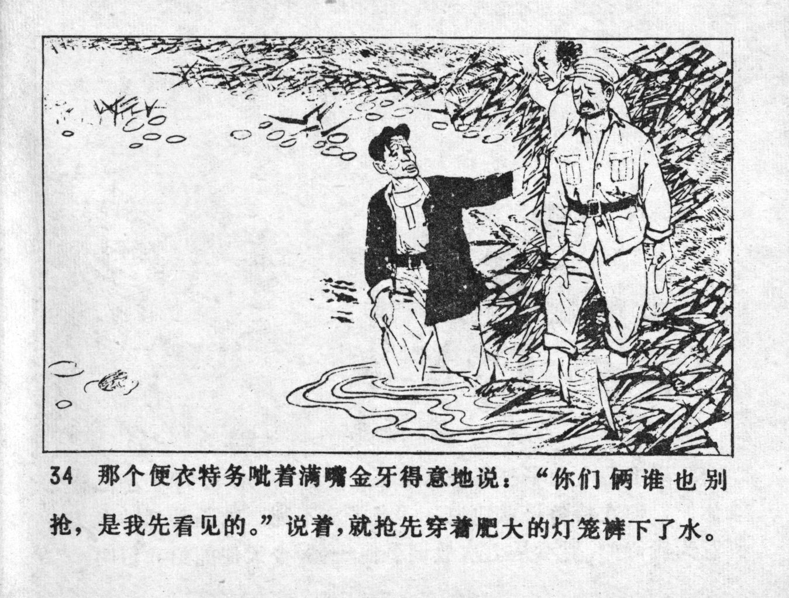
那个便衣特务呲着满嘴金牙得意地说：“你们俩谁也别抢，是我先看见的。”说着，就抢先穿着肥大的灯笼裤下了水。The spy bared his mouth full of gold teeth and said complacently: “Neither of you snatch it, I saw it first.” As he was speaking, he rushed into the water in his loosely fitting knickerbockers. - Page 35
-
 岸上两个伪军气得撅着嘴说：“这坑水可深，小心淹死你。”便衣特务得意地说：“老子淹不死。这是种瓜的老头特意为我留的，要不是上次教训了他一顿，今天他能给我留吗？”Pouting with anger, the two puppet soldiers on the bank said: “That pond is really deep, be careful not to drown.” The spy said proudly: “I won’t drown. The old man who grows melons reserved this one especially for me. If I hadn’t taught him a lesson last time, would he have saved one for me today?”
岸上两个伪军气得撅着嘴说：“这坑水可深，小心淹死你。”便衣特务得意地说：“老子淹不死。这是种瓜的老头特意为我留的，要不是上次教训了他一顿，今天他能给我留吗？”Pouting with anger, the two puppet soldiers on the bank said: “That pond is really deep, be careful not to drown.” The spy said proudly: “I won’t drown. The old man who grows melons reserved this one especially for me. If I hadn’t taught him a lesson last time, would he have saved one for me today?” - Page 36
-
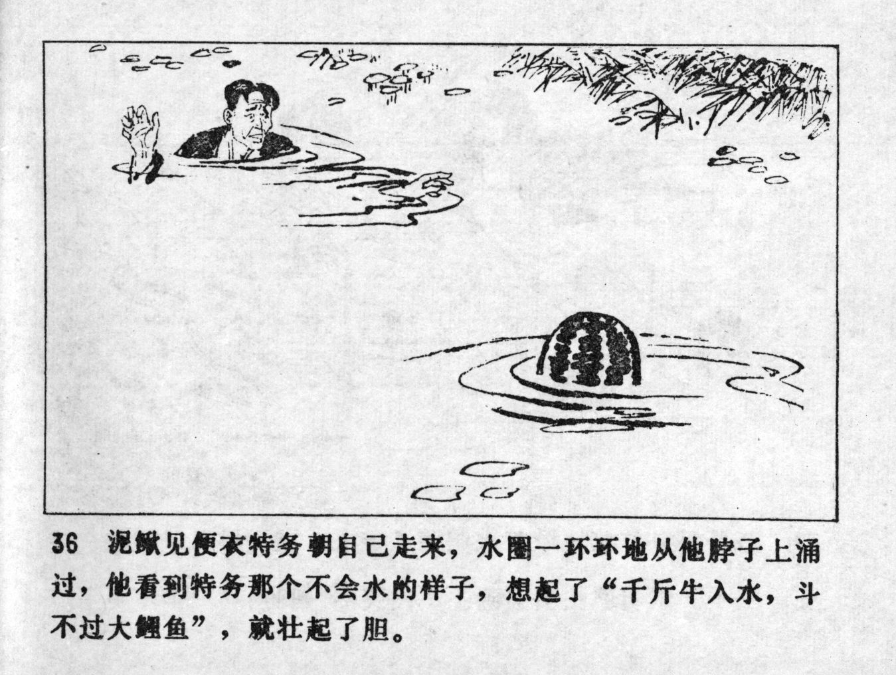
泥鳅见便衣特务朝自己走来，水圈一环环地从他脖子上涌过，他看到特务那个不会水的样子，想起了“千斤牛入水，斗不过大鲤鱼”，就壮起了胆。Niqiu saw the spy coming towards him, ripples on the water around his neck. Upon realizing that the spy could not swim well, he recalled the saying: “When thousand pounds of cattle enter the water, they cannot defeat a carp”, and mustered up his courage. - Page 37
-
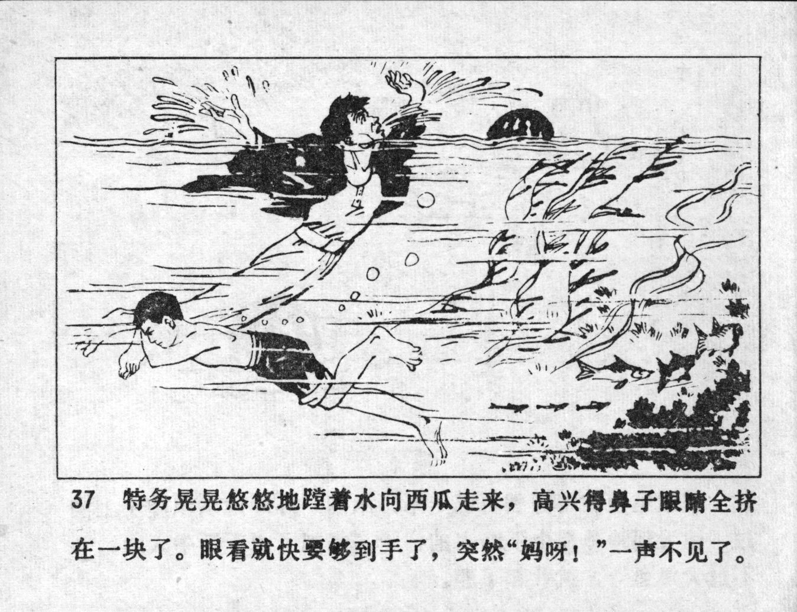
特务晃晃悠悠地蹚着水向西瓜走来，高兴得鼻子眼睛全挤在一块了。眼看就快要够到手了，突然“妈呀！”一声不见了。The spy wiggled and waded towards the watermelon and squeezed his nose and eyes in happiness. As he was reaching for the melon, a sudden “Oh my!” was followed by an abrupt silence. - Page 38
-
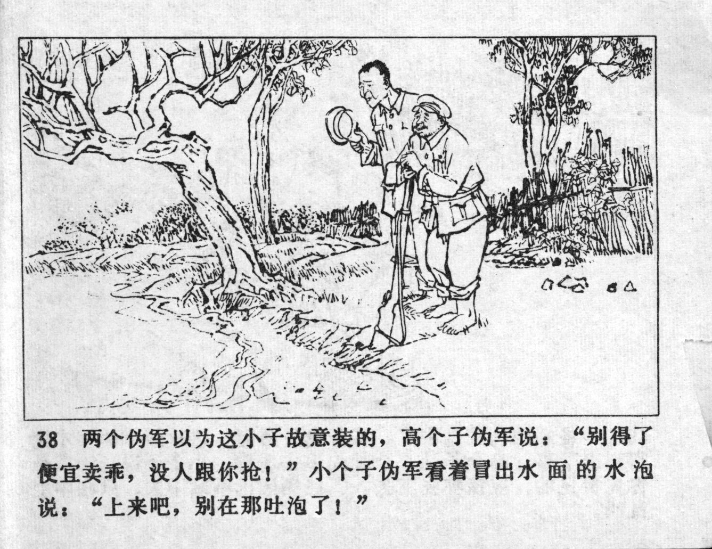
两个伪军以为这小子故意装的，高个子伪军说：“别得了便宜卖乘，没人跟你抢！”小个子伪军看着冒出水面的水泡说：“上来吧，别在那吐泡了！”The two puppet soldiers thought he was just pretending, so the tall one said: “Stop acting, no one's going to fight you for it!” Watching the bubbles rise up to the surface, the short one said: “Come on up, stop blowing bubbles there!” - Page 39
-
 半袋烟的功夫过去了，特务也没露面。这时两个伪军才觉察到出了事。高个子让小个子先下去看看，小个子说：“瓜是你先看见的，应该你先下去。”他俩谁也不敢下去，只在岸上乱叫。They smoked half a pack of cigarettes, yet the spy did not reappear. Only now, the two soldiers realized that something was wrong. The tall one ordered the small one to go down first and take a look, but the small one said: “You saw the melon first, so you should be the one to go down there first.” Neither of them dared to go down, they just stood at the bank and shouted.
半袋烟的功夫过去了，特务也没露面。这时两个伪军才觉察到出了事。高个子让小个子先下去看看，小个子说：“瓜是你先看见的，应该你先下去。”他俩谁也不敢下去，只在岸上乱叫。They smoked half a pack of cigarettes, yet the spy did not reappear. Only now, the two soldiers realized that something was wrong. The tall one ordered the small one to go down first and take a look, but the small one said: “You saw the melon first, so you should be the one to go down there first.” Neither of them dared to go down, they just stood at the bank and shouted. - Page 40
-
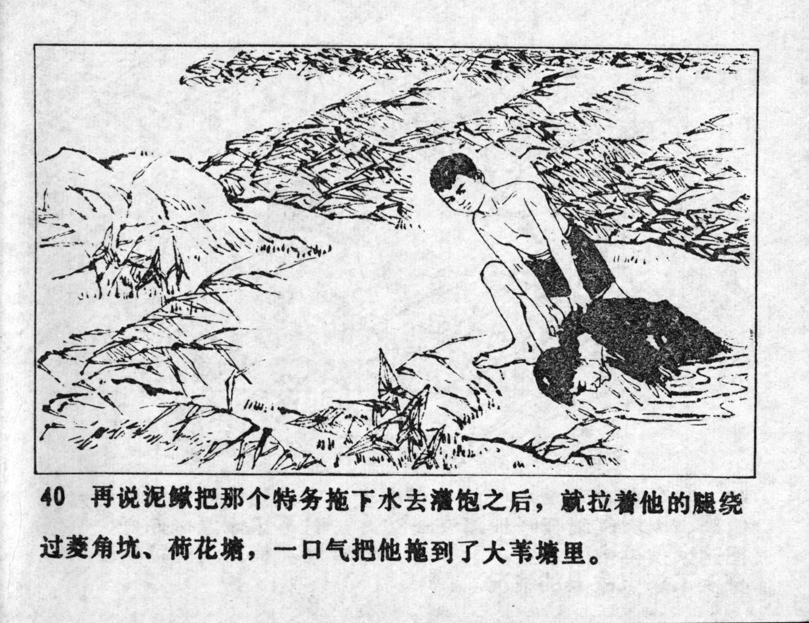
再说泥鳅把那个特务拖下水去灌饱之后，就拉着他的腿绕过菱角坑，荷花塘，一口气把他拖到了大苇塘里。After Niqiu dragged the spy down into the water to fill him up, he pulled him by the legs around the water chestnut pond, the lotus pond, and the big reed pond in one go. - Page 41
-
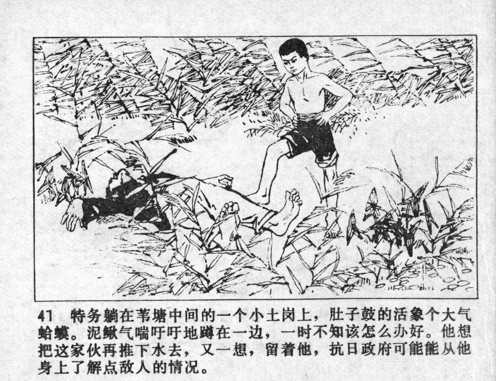
特务躺在苇塘中间的一个小土岗上，肚子鼓的活象个大气蛤蟆。泥鳅气喘吁吁地蹲在一边，一时不知该怎么办好。他想把这家伙再推下水去，又一想，留着他，抗日政府可能能从他身上了解点敌人的情况。The spy laid on a small hill in the middle of the reed pond. His big belly resembled a huge toad. Breathing heavily, Niqiu sat next to him. All of a sudden, he did not know what to do. He wanted to drag the guy back into the water, but thought it over. He could leave him so that the anti-Japanese government might learn something about the situation of the enemy from him. - Page 42
-
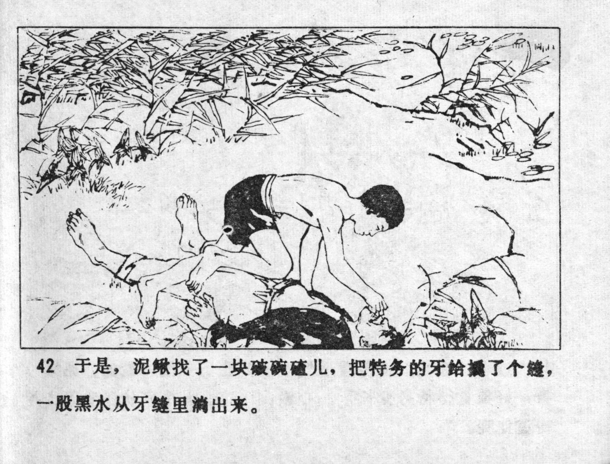
于是，泥鳅找了一块破碗碴儿，把特务的牙给撬了个缝，一股黑水从牙缝里淌出来。Then, Niqiu found a small piece of a broken bowl. With the help of this shard, wedged between the teeth of the spy, Niqiu pried open the spy’s mouth, and black water flowed out. - Page 43
-
 过了一会儿，特务缓过气来了，肚子一鼓一鼓的。泥鳅一看，好像觉得特务变长了，心想：“这么大个家伙，我怎么弄得过他呢？”After a while, the spy was relieved and his stomach bulged. Niqiu had a look, and it seemed that the spy had grown bigger. Niqiu thought: “What a big guy, how did I manage to overwhelm him?”
过了一会儿，特务缓过气来了，肚子一鼓一鼓的。泥鳅一看，好像觉得特务变长了，心想：“这么大个家伙，我怎么弄得过他呢？”After a while, the spy was relieved and his stomach bulged. Niqiu had a look, and it seemed that the spy had grown bigger. Niqiu thought: “What a big guy, how did I manage to overwhelm him?” - Page 44
-
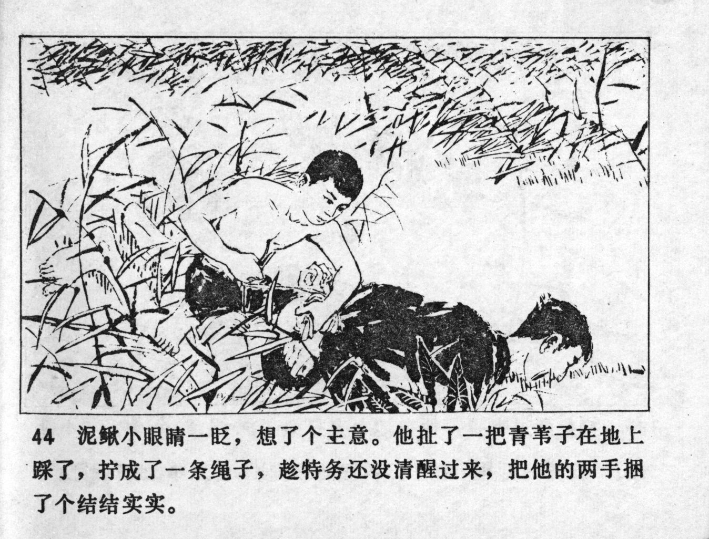
泥鳅小眼睛一眨，想了个主意。他扯了一把青苇子在地上踩了，拧成了一条绳子，趁特务还没清醒过来，把他的两手捆了个结结实实。Niqiu blinked with his small eyes and had an idea. He pulled a handful of green reeds, stepped them on the ground, twisting them into a rope. While the spy was still unconscious, he tied his hands together tightly. - Page 45
-
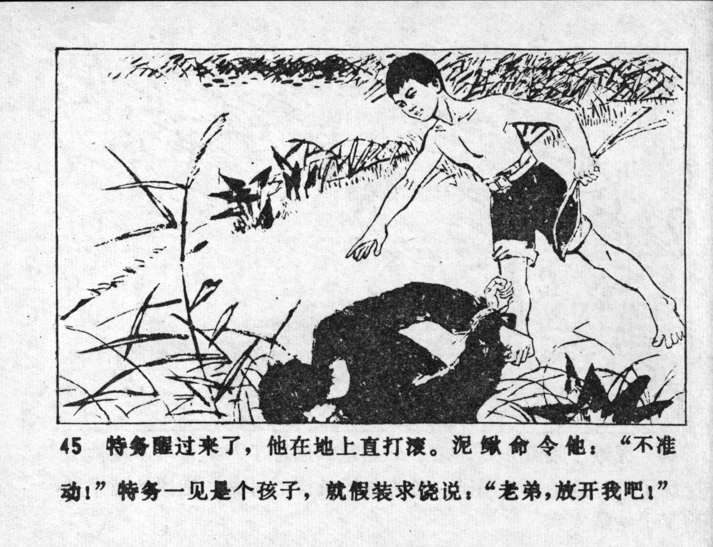
特务醒过来了，他在地上直打滚。泥鳅命令他：“不准动！”特务一见是个孩子，就假装求饶说：“老弟，放开我吧！”The spy woke up and rolled back and forth on the ground. Niqiu commanded: “Freeze!” When the spy realized that Niqiu was just a child, he pretended to ask for forgiveness and said, “Little one, set me free!” - Page 46
-
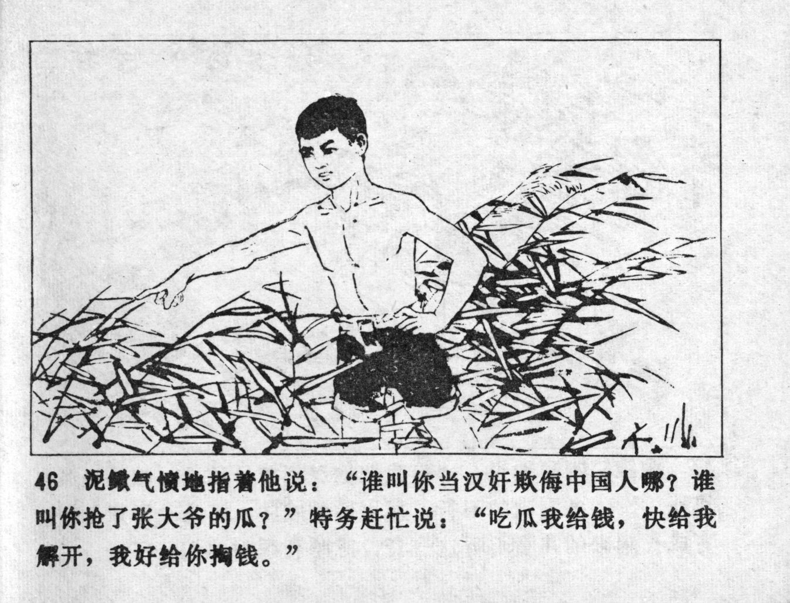
泥鳅气愤地指着他说：“谁叫你当汉奸欺侮中国人哪？谁叫你抢了张大爷的瓜？”特务赶忙说：“吃瓜我给钱，快给我解开，我好给你掏钱。”Niqiu pointed at him furiously and said, “Who told you to become a traitor and bully the Chinese people? Who told you to rob Uncle Zhang's melons?” The spy answered in a rush: “I'll pay for the melon, untie me quickly, so that I can pay you.” - Page 47
-
 泥鳅笑呵呵地说：“等我把你送到抗日政府，咱俩到那再算账。”特务看软的不行，便用硬的威胁，可是毛泽东思想哺育成长起来的儿童不听这一套，威胁利诱对他们行不通。Niqiu laughed: “Just wait until I have sent you to the anti-Japanese government, we will settle our accounts there.” When the spy saw that soft words would not work, he used hard threats, but children raised by Mao Zedong's Thought do not listen to such kinds of threats, and temptations have no effect on them.
泥鳅笑呵呵地说：“等我把你送到抗日政府，咱俩到那再算账。”特务看软的不行，便用硬的威胁，可是毛泽东思想哺育成长起来的儿童不听这一套，威胁利诱对他们行不通。Niqiu laughed: “Just wait until I have sent you to the anti-Japanese government, we will settle our accounts there.” When the spy saw that soft words would not work, he used hard threats, but children raised by Mao Zedong's Thought do not listen to such kinds of threats, and temptations have no effect on them. - Page 48
-
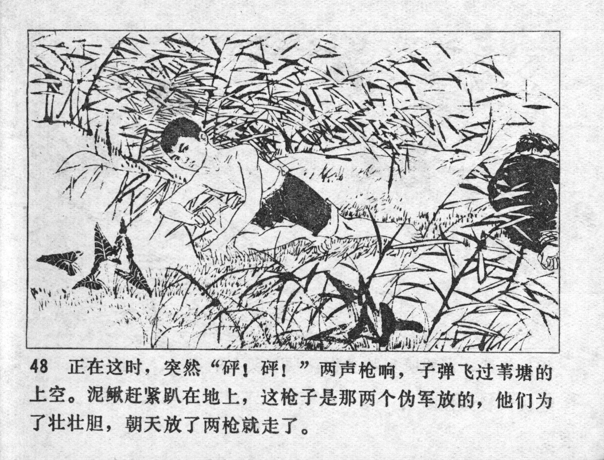
正在这时，突然“砰! 砰！”两声枪响，子弹飞过苇塘的上空。泥鳅赶紧趴在地上，这枪子是那两个伪军放的，他们为了壮壮胆，朝天放了两枪就走了。At that moment – BANG, BANG! – suddenly two shots rang out, and the bullets flew over the reed pond. Niqiu hurriedly got down on the ground. The two puppet soldiers had fired the shots. In order to strengthen their courage, they had fired the two shots towards the sky and fled. - Page 49
-
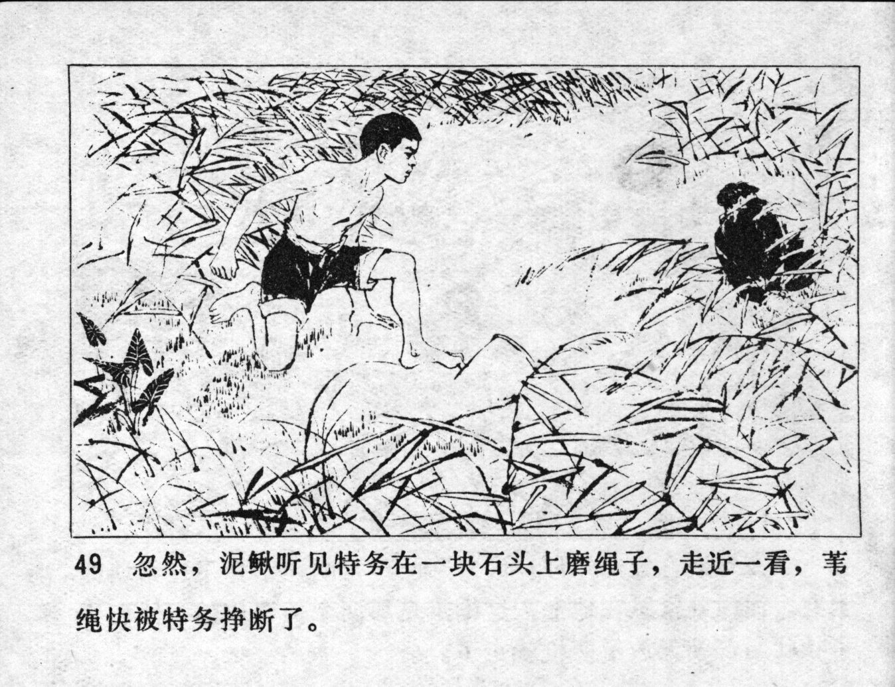
忽然，泥鳅听见特务在一块石头上磨绳子，走近一看，苇绳快被特务挣断了。Suddenly, Niqiu heard the spy grinding the rope on a rock, and when he came closer, he saw that the rope was about to be torn apart. - Page 50
-
 泥鳅猛地骑在特务身上，一边用拳头打，一边狠狠地骂着。特务死命挣扎，两个人就在坑沿边滚了起来。Niqiu violently got on top of the spy, punching him with his fists as he cursed him viciously. The spy struggled for his dear life as the two rolled around on the edge of the pond.
泥鳅猛地骑在特务身上，一边用拳头打，一边狠狠地骂着。特务死命挣扎，两个人就在坑沿边滚了起来。Niqiu violently got on top of the spy, punching him with his fists as he cursed him viciously. The spy struggled for his dear life as the two rolled around on the edge of the pond. - Page 51
-
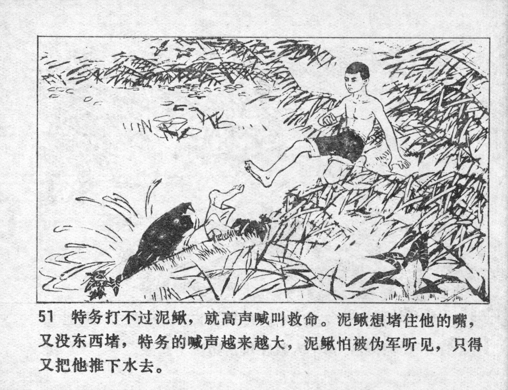
特务打不过泥鳅，就高声喊叫救命。泥鳅想堵住他的嘴，又没东西堵，特务的喊声越来越大，泥鳅怕被伪军听见，只得又把他推下水去.The spy was unable to defeat Niqiu, so he called for help. Niqiu wanted to stuff his mouth, but as he didn’t find anything, the spy’s shouting became louder and louder. Niqiu was afraid that the puppet soldiers would hear him, so he pushed him into the water again. - Page 52
-
 特务在水里喝着水，象是葫芦头灌香油似的，“咕嘟嘟，咕嘟嘟”，水面上冒起了一串串水泡泡。GLUG, GLUG – The spy drank from the water like a bottle gourd from sesame oil, and a stream of bubbles rose to the surface.
特务在水里喝着水，象是葫芦头灌香油似的，“咕嘟嘟，咕嘟嘟”，水面上冒起了一串串水泡泡。GLUG, GLUG – The spy drank from the water like a bottle gourd from sesame oil, and a stream of bubbles rose to the surface. - Page 53
-
 敌人走后，张家庄的人都回来了，就是不见泥鳅。大伙四下里找寻着，到处都在喊着:“泥鳅！泥——鳅——”After the enemy had left, all the villagers of Zhangjia Village returned, but Niqiu was nowhere to be seen. Everybody was searching for him in all directions and shouted: “Niqiu! Niiiiiiqiuuuuuuuuuuu!”
敌人走后，张家庄的人都回来了，就是不见泥鳅。大伙四下里找寻着，到处都在喊着:“泥鳅！泥——鳅——”After the enemy had left, all the villagers of Zhangjia Village returned, but Niqiu was nowhere to be seen. Everybody was searching for him in all directions and shouted: “Niqiu! Niiiiiiqiuuuuuuuuuuu!” - Page 54
-
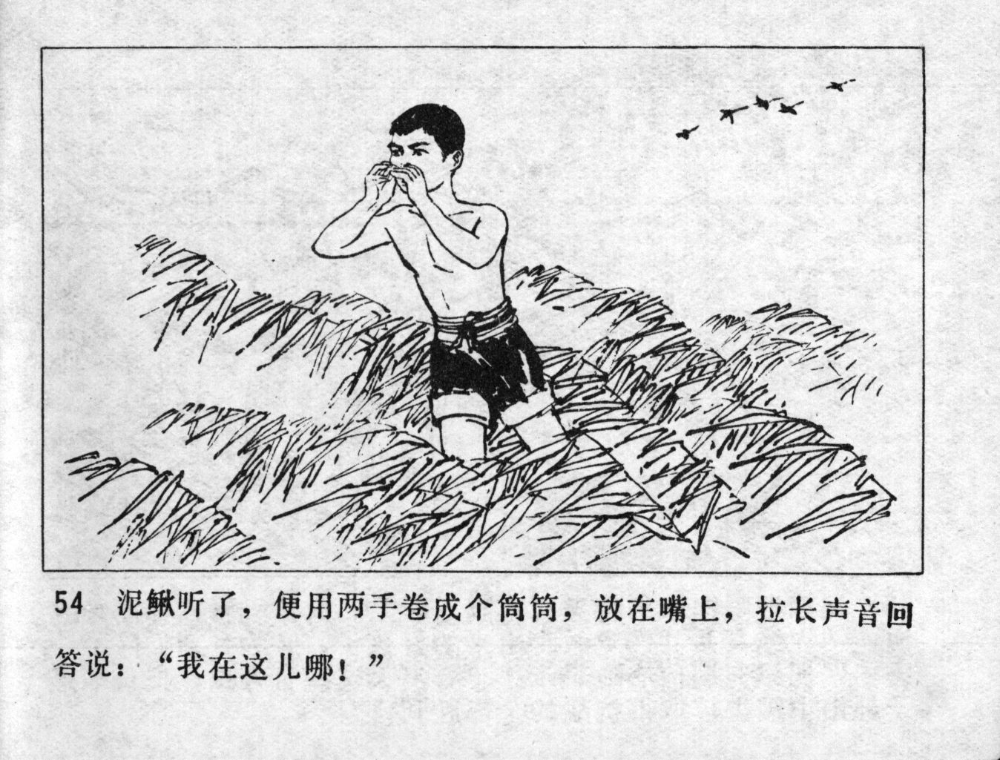
泥鳅听了，使用两手卷成个筒筒，放在嘴上，拉长声音回答说:“我在这儿哪!”When Niqiu heard them, he formed his hands to a tube, raised them to his mouth and answered: “I am heeeeeeeere!” - Page 55
-
 泥鳅把喝饱水的特务又拖到东岸上。大伙一看，都高兴地说：“泥鳅真是共产党教育出来的好孩子，又为乡亲们除了一害！”泥鳅充满信心地表示：“要消灭这些害人虫,把日本鬼子赶出中国去！取得抗战的全部胜利！”Niqiu pulled the spy, who had had enough to drink, to the east bank. When everybody saw this, they happily said: “Niqiu is a good boy educated by the Communist Party, he averted yet another harm to the villagers!” Niqiu said with confidence: “Let’s destroy this vermin and drive the Japanese devils out of China! Let’s achieve total victory in the war!”
泥鳅把喝饱水的特务又拖到东岸上。大伙一看，都高兴地说：“泥鳅真是共产党教育出来的好孩子，又为乡亲们除了一害！”泥鳅充满信心地表示：“要消灭这些害人虫,把日本鬼子赶出中国去！取得抗战的全部胜利！”Niqiu pulled the spy, who had had enough to drink, to the east bank. When everybody saw this, they happily said: “Niqiu is a good boy educated by the Communist Party, he averted yet another harm to the villagers!” Niqiu said with confidence: “Let’s destroy this vermin and drive the Japanese devils out of China! Let’s achieve total victory in the war!”
-
This translation was produced in a joint translation project by BA students at the Institute of Chinese Studies, University of Freiburg University, supervised by Lena Henningsen. We acknowledge the support of the ERC-funded project “The Politics of Reading in the People’s Republic of China” (READCHINA, Grant agreement No. 757365/SH5: 2018-2023). We thank Julia Schneider for a critical reading of the text and our colleagues Matthias Arnold and Hanno Lecher from the Centre for Asian and Transcultural Studies (CATS), Heidelberg University, for providing us with high resolution scans of the comics which are part of the Seifert collection. ↩︎